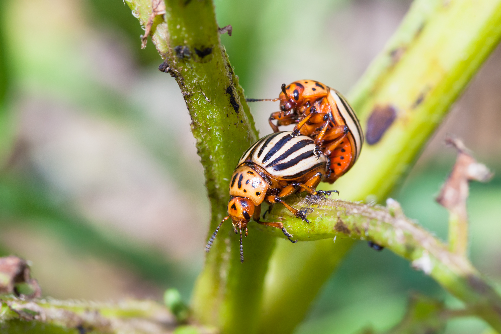
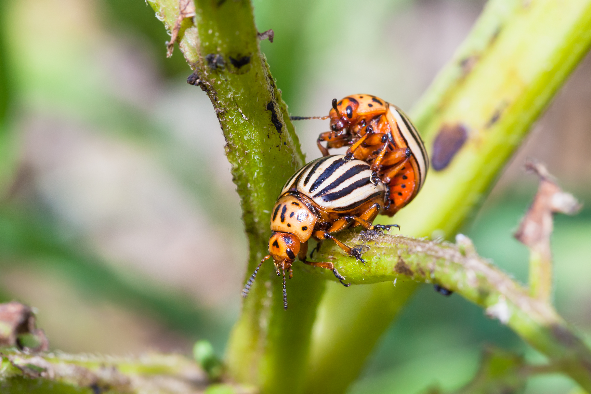

Coccinelles

/ Définition
Les coccinelles sont probablement les plus connues des alliés du jardinier. Avec près d’une centaine d’espèces en France, dont la majorité d’entre elles sont prédatrices d’insectes ravageurs comme les pucerons et les cochenilles.
/ La coccinelle, insecte indispensable et populaire : comment vit-elle ?
La coccinelle est un auxiliaire des jardins hors-pair. Gourmande de cochenilles et de pucerons, elle peut nous en débarrasser en peu de temps dès son stade larvaire. C’est donc un coléoptère très précieux et donc absolument indispensable au jardin. .
Découvrons qui est exactement la Bête à bon Dieu dont les points ne nous indiquent pas du tout son âge, contrairement à ce que certains croient
 

/ Coccinelle : principales caractéristiques
La coccinelle (Coccinella) est un insecte qui appartient à la famille des Coccinellidae et à l’ordre des Coléoptères (Coleoptera). Pernette et surtout Bête à bon Dieu sont ses principaux surnoms. Quant à son nom, il est issu du terme latin Coccinus qui signifie écarlate car dans sa forme classique, la coccinelle possède un élytre (aile) de couleur rouge.
Dans la majeure partie des cas, la coccinelle mesure tout au plus 1 centimètre ½ mais certaines ne dépassent pas 1 millimètre. Son dos est soit ovale, soit arrondi et son ventre est plat. Elle possède des antennes rétractables lorsqu’elles sont au repos, six pattes courtes segmentées dont les extrémités portent des griffes qui se séparent en deux c’est pourquoi on parle de griffes bifides. Quant à sa tête, elle est noire et porte deux taches de couleur blanche.
.jpg)